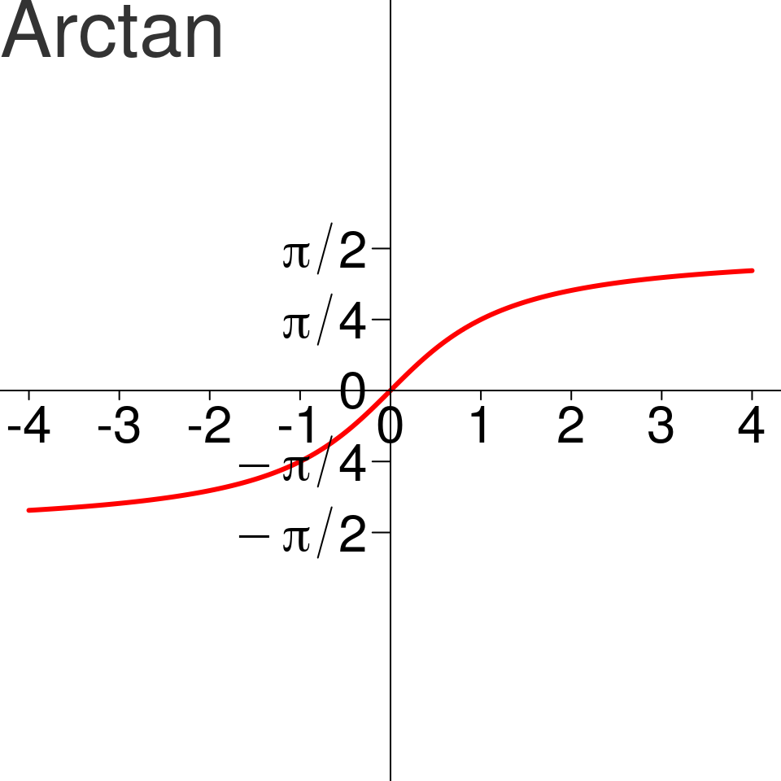

- Révisions générales
- Ensembles de nombres
- Manipulations standards
- Fonctions usuelles
- Trigonométrie
- Notations Somme et Produit
- Limite
- Dérivabilité
- Développements limités
- Dérivées partielles
Octobre 2019 - Promo Fluor
On rappelle l’existence de d’ensembles de nombres déjà vu dans les classes antérieures:
La
\[n! = 1 \times 2 \times \dots \times (n-1) \times n\]
Par convention, \(0! = 1\).
Remarque On note que \(n! = n \times (n-1)!\).
On donne ici les valeurs de \(n!\) pour de faibles valeurs de \(n\)
| n | factorielle |
|---|---|
| 1 | 1 |
| 2 | 2 |
| 3 | 6 |
| 4 | 24 |
| 5 | 120 |
| 6 | 720 |
| 7 | 5040 |
Alors \(\forall n \geq n_0, P(n)\) est vraie
Soit \(n\) un entier naturel non nul, trouver une formule close (c’est à dire sans \(\dots\)) et la démontrer pour
\(S_n = \frac{1}{2!} + \frac{2}{3!} + \dots + \frac{n-1}{n!} + \frac{n}{(n+1)!}\)
Tout nombre entier \(n\) est soit pair, soit impair.
Généralisation (division euclidienne)
Pour tout entier naturel \(n\) et tout entier naturel non num \(d\), il existe un unique couple d’entiers \((q, r)\) tel que: \[ n = dq + r \text{ et } 0 \leq r \leq d-1 \] \(n\) est divisible par \(d\) si et seulement si \(r = 0\).
Montrer par récurrence que \((q,r)\) existe et par l’absurde qu’il est unique.
Remarque
\(\sqrt{2}, \pi, e\) sont des nombres irrationnels. La nécessité de construire \(\mathbb{R}\) provient de raisons non-algébriques, pour manipuler des quantités d’intérêt (en géométrie pour \(\sqrt{2}\) et \(\pi\), en calculs d’intérêts pour \(e\)) qu’on ne peut pas exprimer comme des fractions d’entiers.
Remarque Un intervalle est un sous-ensemble de \(\mathbb{R}\) sans “trous”, sans discontinuité.
Il y a 3 types d’intervalles:
Un sous ensemble \(A \subset \mathbb{R}\) est dit
Si \(A\) est à la fois majorée et minorée, elle est
Intuitivement:
Traduire avec des quantificateurs les deux propositions suivantes:
Est-ce possible si \(A\) est fini? Pourquoi?
Si \(M\) majore \(A\), alors tout \(x \geq M\) aussi. On cherche le plus petit majorant.
Soit \(A\) une partie
Si \(A\) admet une borne supérieure (resp. inférieure), alors elle est unique. On la note \(\sup A\) (resp. \(\inf A\)).
Questions - Quelles parties de \(\mathbb{R}\) admettent un maximum? un minimum?
Réponses partielles
À connaitre
Interdit
Soit \(x \in \mathbb{R}\), la valeur absolue de \(x\), notée \(|x|\) est définie par \[|x| = \max(x, -x)\]
Soit \(x \in \mathbb{R}\), la partie entière de \(x\), notée \(\lfloor x \rfloor\) est définie par \[\lfloor x \rfloor \in \mathbb{Z} \quad \text{et} \quad \lfloor x \rfloor \leq x < \lfloor x \rfloor + 1\]
Simplifier les expressions suivantes:
Résoudre les équations d’inconnue \(x\) suivantes:
Pour \(a > 0\) et \(x \in \mathbb{R}\), on pose \(a^x = e^{x \ln a}\)
Soient \(x, y\) deux rééls et \(a, b\) deux réels strictement positifs:
| \(a^0 = 1\) | \(a^{x+y} = a^x . a^y\) | \((a)^{-x} = \frac{1}{a^x}\) |
| \(a^{x -y} = \frac{a^x}{a^y}\) | \((ab)^{x} = (a)^x . (b)^x\) | \((a^x)^y = a^{x.y}\) |
| \(a^1 = a\) | \((a^x)^{\frac{1}{x}} = a\) | \(\sqrt[n]{a} = a^{\frac{1}{n}}\) |
Rapppels
Il y a deux grandes types d’équations:
Pour les polynömiales, il faut savoir résoudre des équations de degré \(1\) et \(2\) et factoriser à partir de racines évidentes pour les celles de degrés supérieures. Pour les autres, il faut utiliser des astuces ad-hoc (mais avec quelques astuces classiques dont le changement de variables).
En présence de paramètres, il faut parfois faire des disjonctions de cas pour éviter de faire des opérations interdites.
Résoudre, en fonction des paramètres \(a\) et \(b\), les équations suivantes:
Résoudre les équations (de \(X\)) suivantes:
Résoudre les équations (de \(x\)) suivantes:
Soient \(a\) et \(b\) deux réels tels que \(a \leq 5\) et \(b \leq 6\). Que peut-on dire de \(2a\), \(-3b\), \(a+b\), \(a - b\), \(ab\), \(a/b\)? Même chose si \(b \geq 6\).
Pour tous réels \(x\) et \(y\), \(|x + y| \leq |x| + |y|\).
Cette égalité vient de la géométrie: dans un triangle, la sommes des longueurs de deux côtés est toujours supérieure ou égale à celle du troisième (avec égalité si et seulement si le triangle est aplati).
Montrer que pour tous réels \(x\) et \(y\), \(| |x| - |y| | \leq |x - y|\).
Montrer que pour tous réels \(x\) et \(y\), \(x^2 + y^2 \geq 2|xy|\). [inégalité arithmético-géométrique, à connaître]
Résoudre les inégalités suivantes:
La mesure en radians d’un angle \(\alpha\) est la longueur d’un arc de cercle de rayon \(1\) délimité par cet angle.
Plus généralement, soit \(\mathcal{C}\) est un cercle de centre \(O\) et de rayon \(R\). On considère deux points \(A\) et \(B\) de \(\mathcal{C}\).
La mesure principale de l’angle \(\hat{AOB}\) est l’unique réel \(\alpha\) tel que
Du point de vue des longueurs (positives par définition), on a le choix de “tourner” dans un sens ou dans l’autre. Dans de nombreux cas, la question du “sens” de rotation est néanmoins importante.
Par définition, on décide que le sens positif est le sens contraire à celui des aiguilles d’une montre. C’est le
Soient \(A, B, C\) 3 points du plan, l’angle orienté \(\hat{ABC}\) est noté \((\vec{BA}, \vec{BC})\).
Plus généralement, pour tous vecteurs \(\vec{u}\), \(\vec{v}\) du plan, on note \((\vec{u}, \vec{v})\) l’angle orienté \((\vec{BA}, \vec{BC})\) pour tous points \(A, B, C\) tels que \(\vec{u} = \vec{BA}\) et \(\vec{v} = \vec{BC}\)
Soit \(\mathcal{P}\) le plan usuel orienté. Soit \(\Omega\) un point du plan et \(\alpha\) un réel. On appelle
Les deux propriétés traduisent le fait que le point \(M\) de coordonnées \((\alpha, \beta)\) est sur le cercle trignométrique (celui de centre \(O = (0, 0)\) et de rayon \(1\)).
Seules les deux premières sont nécessaires, les autres s’en déduisent.
Pour tout couple de réels \((a, b)\), on a:
Et sous réserve que les tangentes soient bien définies
Elles se démontrent à partir des formules d’addition (voir feuille d’exercice)
Pour tout couple de réels \((a, b)\), on a:
En cas de doute, n’hésitez pas à tester ces formules sur des valeurs connues (par exemple \(a = b\) ou \(a = -b\)) pour vérifier que vous avez la bonne formule. .
Le cas \(a=b\) correspond à un cas particulier d’intérêt (appelé angle double). Les formules d’additions se simplifient alors en
Soit \(u\) un réel donné, on cherche à résoudre en \(x\):
\(x\) est solution \(\Leftrightarrow \begin{cases} \exists k\in \mathbb{Z} \text{ tel que } x = u + 2k\pi \\ \text{OU} \\ \exists k\in \mathbb{Z} \text{ tel que } x = -u + 2k\pi\end{cases}\)
\(x\) est solution \(\Leftrightarrow \begin{cases} \exists k\in \mathbb{Z} \text{ tel que } x = u + 2k\pi \\ \text{OU} \\ \exists k\in \mathbb{Z} \text{ tel que } x = \pi-u + 2k\pi\end{cases}\)
Attention à ne pas oublier le OU du système.
Soit \(u\) un réel donnéon cherche à résoudre en \(x\).
\(x\) est solution si et seulement si \(\exists k\in \mathbb{Z}\) tel que \(x = u + k\pi\)
\(x\) est solution si et seulement si \(\exists k\in \mathbb{Z}\) tel que \(x = u + 2k\pi\)
Résoudre les équations suivantes:
Attention à l’intervalle auquel appartient \(\theta\)!!

\(x\) est solution si et seulement si \(\exists k\in \mathbb{Z}\) tel que \(x = \arctan(a) + k\pi\)
La deuxième formulation est plus générale que la première.
Attention, si on demande les solutions dans un intervalle donnée (par exemple \([0, \pi]\)), il faut sélectionner uniquement les valeurs de \(k\) tel que \(x\) soit dans le bon intervalle. Par exemple, les solutions de \(\sin(x) = 1\) dans \([0, 4\pi]\) sont \(x = \frac{\pi}{2}\) et \(x = \frac{5\pi}{2}\)
Soit \((a, b) \in \mathbb{R}^2\). Il existe \((R, \psi) \in \mathbb{R}^2\) tel que: \[\forall x\in\mathbb{R}, \quad a\cos(x) + b\sin(x) = R\cos(x - \psi)\]
Résoudre les équations suivantes, dans \(\mathbb{R}\) puis dans \([0, 2\pi]\):
On utilise les signes \(\sum\) et \(\prod\) pour désigner des sommes et des produits
\[ \sum_{i = 0}^n u_i = u_0 + u_1 + \dots + u_{n-1} + u_n\]
\[ \prod_{i = 0}^n u_i = u_0 \times u_1 \times \dots \times u_{n-1} \times u_n\]
L’ensemble des valeurs prises par l’indice \(i\) est ici \(\{0, 1, \dots, n-1, n\}\) mais il peut bien sûr être différent. Par exemple, pour tout \(n \geq 1\), on a \[n! = \prod_{i=1}^n i\].
La variable \(i\) dans la notation précédente est dite muette, elle n’a de sens qu’à l’intérieur de CE symbole \(\sum\) (ou \(\prod\)).
Autrement dit les \(i\) situés à l’extérieur du symbole \(\sum\) sont complétement indépendants des \(i\) situés à l’intérieur du symbole \(\sum\).
On peut donc remplacer le symbole \(i\) par un autre, par exemple \(j\), à condition de rester cohérent: \[ \sum_{i = 0}^n u_i = \sum_{j = 0}^n u_j\]
Calculer
Soit \(n\) un entier, \((a_i)_i\) et \((b_i)_i\) deux familles indexées par \(i \in \{1, \dots, n\}\) et \(\lambda\) un réel. On a \[ \begin{align} \sum_{i = 0}^n (a_i + b_i) & = \sum_{i = 0}^n a_i + \sum_{i = 0}^n b_i \\ \sum_{i = 0}^n (\lambda \times a_i) & = \lambda \times \sum_{i = 0}^n a_i \end{align} \]
Soit \((a_i)_i\) une famille indexée par \(\mathbb{N}\). On a pour tout entier \(n\) \[ \sum_{i = 1}^n a_i = \sum_{i = 2}^{n+1} a_{i-1} = \sum_{i = 0}^{n-1} a_{i+1} \]
Ou tout autre décalage du même style, le but étant généralement de se ramener à une somme connue.
Conseil: Posez clairement le changement de variable et faites le en 3 étapes
En posant \(j = k-1\), montrer que pour tout \(n \in \mathbb{N}\), on a \[\sum_{k=1}^n k^2 = n + 2\sum_{j=1}^{n-1} j + \sum_{j=0}^{n-1} j^2\]
On peut démontrer tous ces résultats par récurrence.
Cette formule sert dans tous les chapitres. Vous la connaissez en général avec \(n = 1\).
Soit \(a \in \mathbb{C}\) et \(n \in \mathbb{N}\), alors \(a^{n+1} - 1 = (a-1)\sum_{i=0}^n a^i\).
On peut la réécrire pour \(a \in \mathbb{C}-\{1\}\) en \[\sum_{i=0}^n a^i = \frac{1 - a^{n+1}}{1-a}\]
Soit \((u_i)_{i \in \mathbb{N}}\), alors \[\sum_{i=0}^n (u_{i+1} - u_i) = u_{n+1} - u_0\]
Calculer